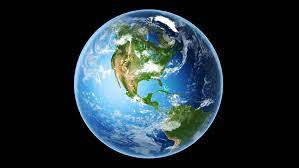

earth
-
Earth is the third planet from the Sun and the only astronomical object known to harbor and support life. About 29.2% of Earth's surface is land consisting of continents and islands. The remaining 70.8% is covered with water, mostly by oceans, seas, gulfs, and other salt-water bodies, but also by lakes, rivers, and other freshwater, which together constitute the hydrosphere. Much of Earth's polar regions are covered in ice. Earth's outer layer is divided into several rigid tectonic plates that migrate across the surface over many millions of years, while its interior remains active with a solid iron inner core, a liquid outer core that generates Earth's magnetic field, and a convective mantle that drives plate tectonics.
-

-

-
Earth's atmosphere consists mostly of nitrogen and oxygen. More solar energy is received by tropical regions than polar regions and is redistributed by atmospheric and ocean circulation. Greenhouse gases also play an important role in regulating the surface temperature. A region's climate is not only determined by latitude, but also by elevation and proximity to moderating oceans, among other factors. Severe weather, such as tropical cyclones, thunderstorms, and heatwaves, occurs in most areas and greatly impacts life.
Earth's gravity interacts with other objects in space, especially the Moon, which is Earth's only natural satellite. Earth orbits around the Sun in about 365.25 days. Earth's axis of rotation is tilted with respect to its orbital plane, producing seasons on Earth. The gravitational interaction between Earth and the Moon causes tides, stabilizes Earth's orientation on its axis, and gradually slows its rotation. Earth is the densest planet in the Solar System and the largest and most massive of the four rocky planets.